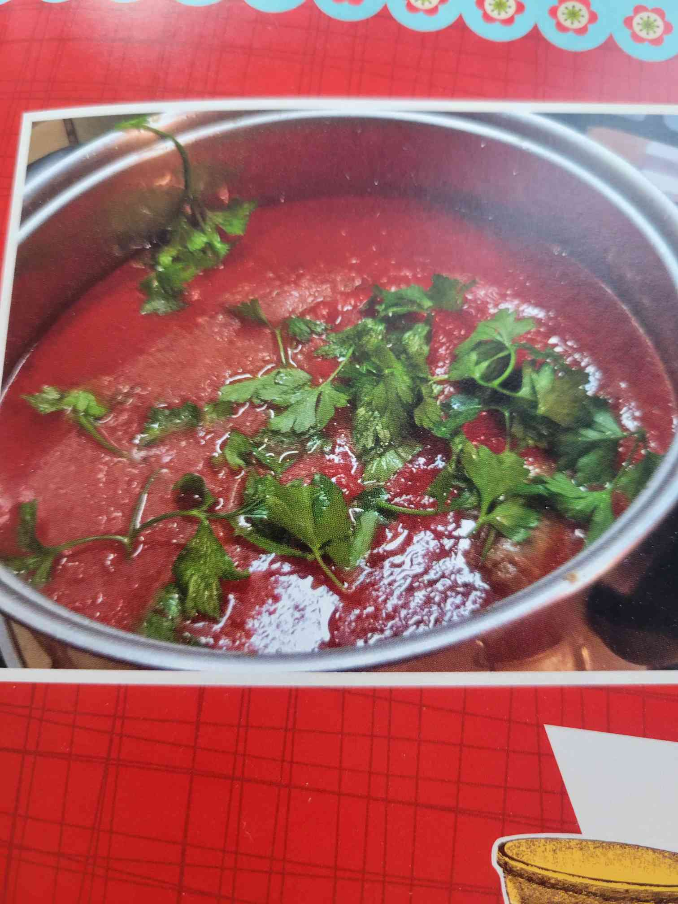

The Sauce

Obviously the most important part of any pasta and meat dish. Grandma's speciality was the sauce.
Ingredients
- 2-3 cans of Hunts crushed tomatoes per pot
- fill the empty can 2/3 full of water and then add after you empty the can into the pot
- Parsley stems and leaves (stems cut in 2-3 pieces)
- A bunch of butter, like way more than you think you need. The fat is what makes it taste great!
- Way more salt and pepper than you think you need
- 8-12 cloves of garlic
Cooking directions
- Add all ingredients
- Bring to boil
- Then lower to simmer for 5-6 hours
- Taste test and add butter,garlic, and salt as needed til it's incredibly savory
- Add a small amount of basil before serving!